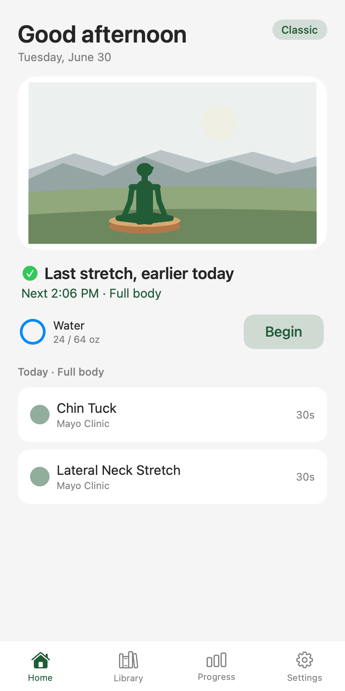
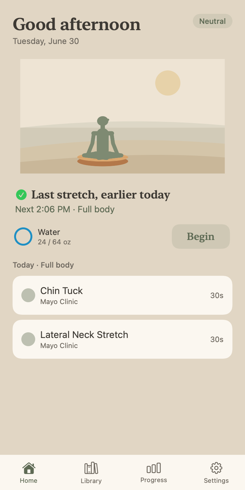

Classic — green hills

These two had Stanley on a plain wash; now they carry a scene like every other theme. Same calm, minimal register. This is the phone Home; the watch home card uses the same art. Say ship it or tell me what to tweak.

